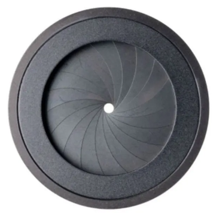
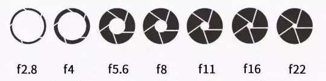
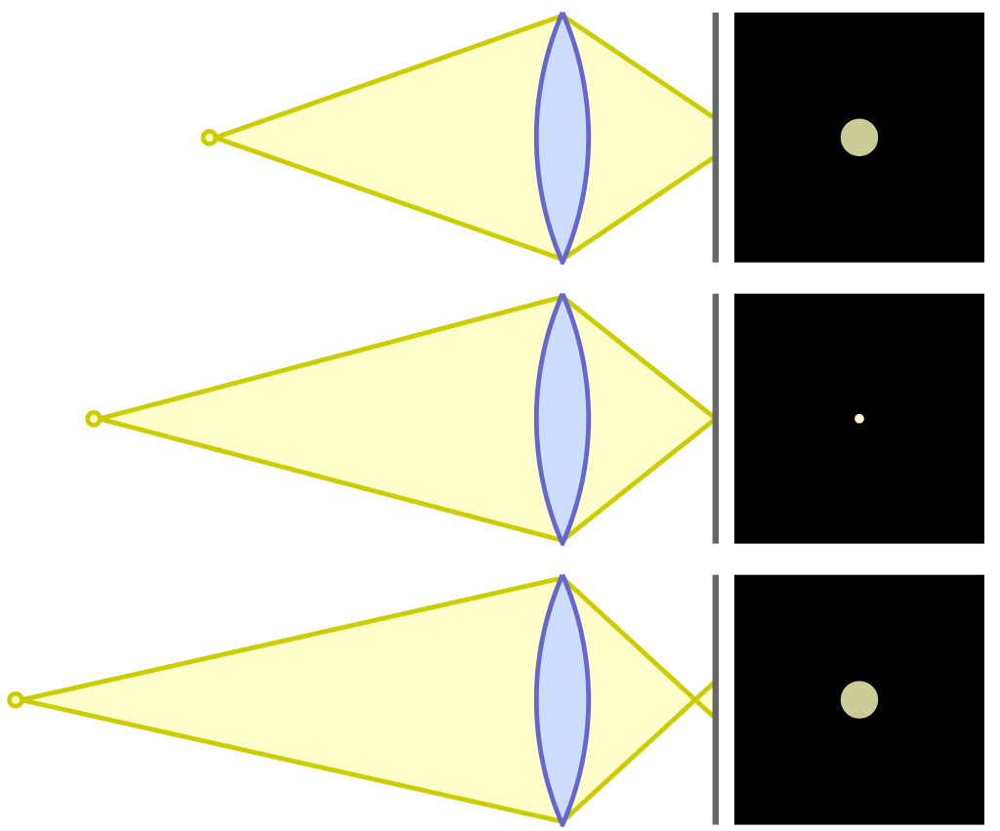
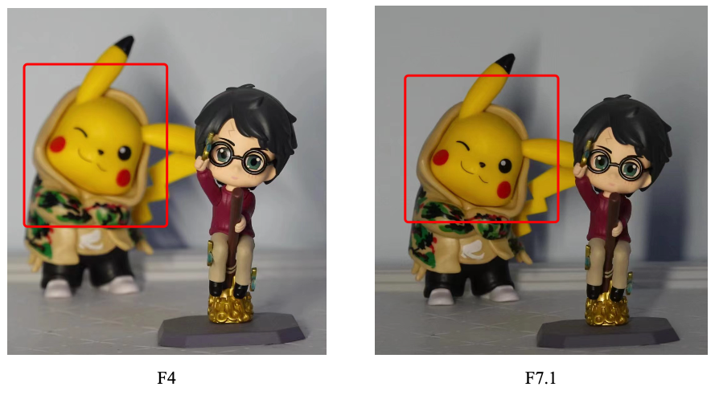
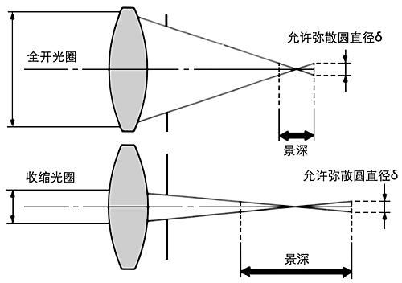

当我们接触摄影时，经常会听到光圈，景深等等专业词汇，这些词汇具体指的是什么呢？让我们一起来学习一下。
# 什么是光圈？
光圈就是用于控制镜头进光多少的装置，如下所示。
从上图我们可以看到目前中间的孔非常小，自然进光量也很少。通过调节光圈，我们就可以控制最终进入镜头的光线数量。
# 光圈的大小如何衡量？
光圈的大小使用一个 F 值来衡量。
光圈F值 = 镜头焦距 / 镜头有效口径直径
当焦距一定时，直径越大，这个比值自然也就越小。也就是我们所说的 F 值越小。如下所示

f2.8 代表的光圈比 f4 大。
那为什么相临两档光圈之间的的比值是 4/2.8 = 1.42？
人的直观想法，相邻两档的光圈进光量应该差一倍。事实也确实如此，那为什么这个 f 值的比值不是 2，而是 1.42 呢？这个就需要重新回看 F 值的公式。
光圈F值 = 镜头焦距 / 镜头有效口径直径
其是使用直径计算的，两个圆的面积相差一半，其直径比正好是根号 2，也就是 1.42。
# 什么是景深？
简而言之，就是能够在相机上清晰成像的景物深度。当你面前 1m-10m 内的物体都可以在相机中清晰成像，1m-10m 这个区间我们就可以认为是景深。
想要了解景深，我们首先需要了解一个概念，弥散圆。
上图镜头的左边是一个点光源，右边是一个成像的平面。当点光源左右移动时，它在右边的像平面上所成的像是不同大小的圆。当这个圆的直径足够小，相片对于我们人眼而言依然清晰。当这个圆再大些，相片就会显得模糊，我们称这个临界的点光源图像为模糊圆。
再结合景深的概念，这个点光源在某个范围内移动时，其在右边所成的像对于人眼而言都是清晰的。这个范围我们就可以称为景深。
# 光圈和景深的关系？
先看一个不同光圈大小的景深对比图。

从上图的对比，我们可以很明显看到不同的光圈值会带来不同的景深，小光圈 F7.1 的景深更深，这又是为什么呢？

从弥散圆的介绍我们可知，对于我们人眼而言，允许弥散圆的直径是确定的。如果我们想改变景深，能做的只有改变透镜，而光圈恰恰扮演了这样的角色。由上图可知，小光圈可以带来更深的景深，而大光圈的景深则更浅。
- Tips： 拍人像而言，我们希望画面的主体都是美美的自己，其他远处的无关景物都应被屏蔽，那么自然应该用大光圈来拍摄。